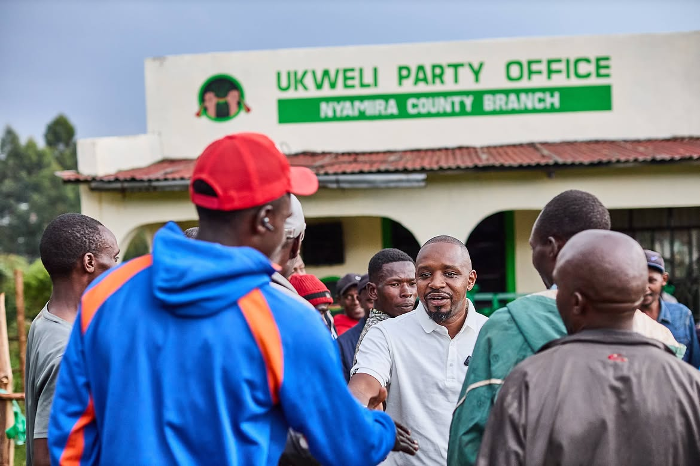
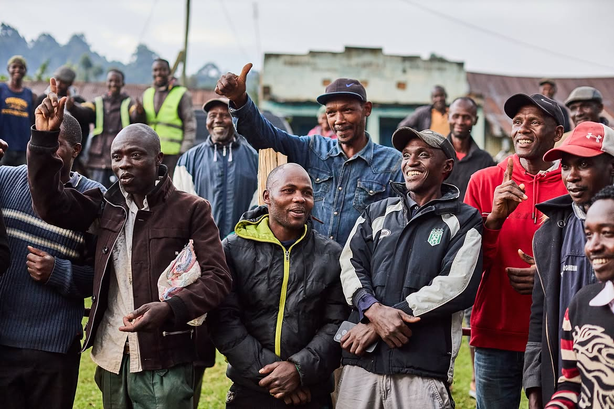
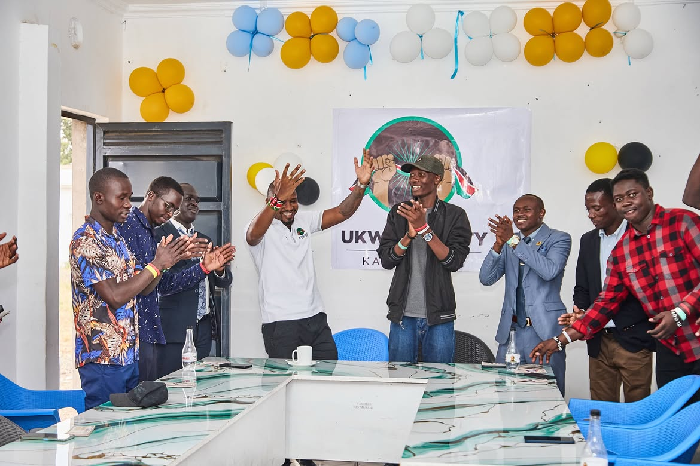
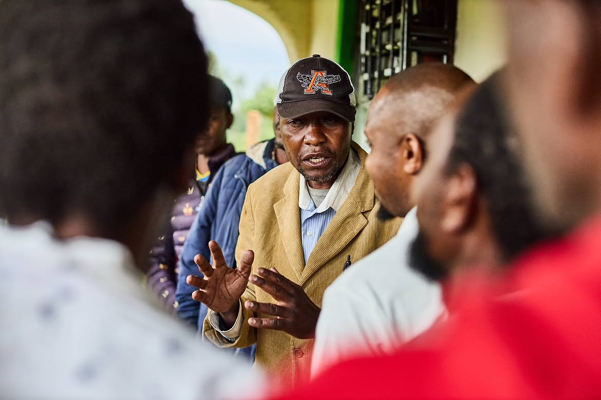

Party Structure & Process
Member application
It is now easy to verify your party membership status, join, or resign from a political party using your phone or online.
1
Phone: Dial *509# and follow the prompts.
2
Online: Log on to ippms.orpp.or.ke and register, or log in with your eCitizen account.
Should you have any issues, please send us a WhatsApp message on +254 799 973 889.
Party documents
- Ukweli Party Constitution PDF
- Party Resignation Template PDF
- Ukweli Pledge of Commitment PDF
- Code of Conduct PDF
- The Election and Nomination Rules PDF
- Ukweli Party Charter PDF
Building branches
The Party Constitution provides for branches in at least twenty-four counties. Work with other members to grow the Ukweli Party and Movement branch in your county, raise awareness about the Charter, fundraise for Ukweli, and campaign for our candidates.



